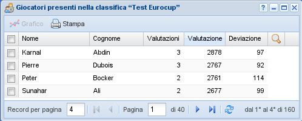

Valutazioni dei giocatori¶
Ogni valutazione produce una serie di valutazioni per ogni singolo giocatore coinvolto nei tornei associati, una per ogni torneo. La più recente valutazione di ogni giocatore forma appunto una sorta di classifica che riesce a misurare la forza reciproca dei vari giocatori, anche quando questi non si sono mai incontrati direttamente.

Valutazioni giocatori¶
Questo permette di avere una base non casuale per generare gli abbinamenti nei tornei successivi. Come sotto prodotto statistico è possibile ottenere l'andamento nel tempo della forza dei giocatori, in forma di grafico.